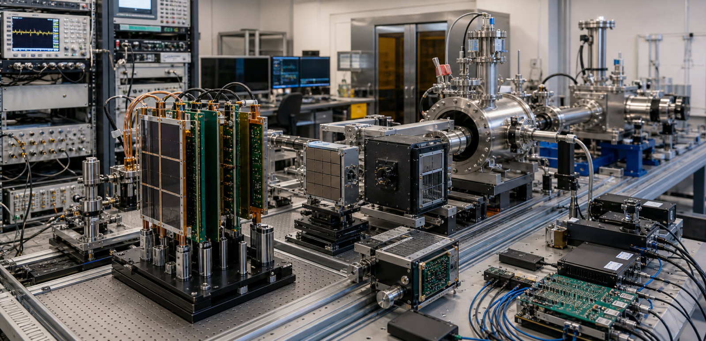
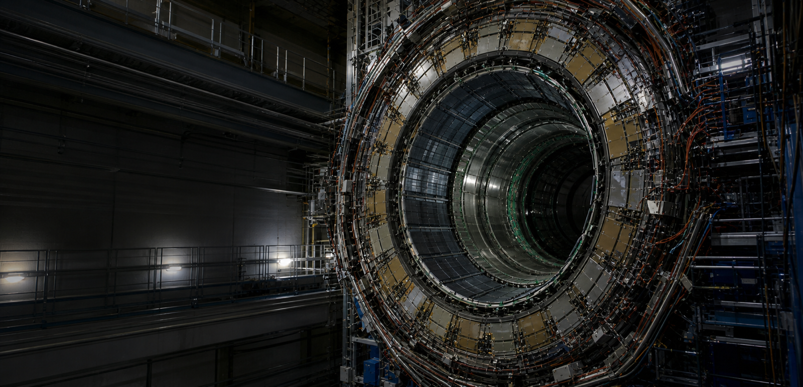

物理科学
未来粒子物理学探测系统技术的研究与发明
物理科学研究致力于揭开物质的基本组成及其相互作用，并发展核心检测原理和系统能力，以推动粒子物理学革命性的进步。我们在五个互补研究领域追求突破：中微子探测、高能对撞机物理、暗物质及罕见核衰变、宇宙射线及天体粒子物理以及固定靶新物理。我们的工作依托从检测原理创新到集成探测器系统原型开发的端到端专业能力，支持全球领先粒子物理学设施的前沿探索。
研究领域
中微子振荡现象为超出标准模型的物理学提供了确凿证据，对理解宇宙物质-反物质不对称性至关重要。我们团队推进长基线中微子实验的核心探测原理与系统架构，提升中微子属性探测的灵敏度极限。
最新新闻


11月27日
新华网
由华中科技大学生命学院教授谢庆国带领的13个学科融合的团队，经过11年努力，攻克了高端医疗仪器PET数字化技术难题，研制出具有自主知识产权的数字PET小型机器...
重点科研项目


实验室纪事
我们的使命是打造一片适宜顶尖科学蓬勃发展的科研环境：保障科研人员发展、孕育创意与创新、完善硬件平台与基础设施，支撑 PET 实验室肩负服务国家的使命。
谢庆国
首席研究员，教授，博士生导师
数字化探测技术与仪器开发
质子治疗监测

进一步探索
重点论文
A novel iterative iso-transmission line empirical material decomposition algorithm for multi-energy photon-counting CT
Jan 01
Biomedical Signal Processing and Control,
99, 2025, 106853. doi:10.1016/j.bspc.2024.106853.
Performance Evaluation of New PET/CT DigitMI 930
Jan 09
IEEE Transactions on Radiation and Plasma
Medical Sciences, vol. 9, no. 5, pp. 578-585, May 2025, doi:
10.1109/TRPMS.2025.3526659.
Investigation of a Dual-Panel In-Beam PET Based on Digital Detectors for Proton Therapy Monitoring With Different Monitoring Strategies: A Simulation Study
Jan 30
IEEE Transactions on Radiation and Plasma
Medical Sciences, vol. 10, no. 4, pp. 582-592, April 2026, doi:
10.1109/TRPMS.2025.3584122.